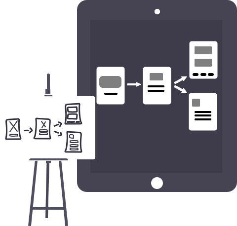

coderwurst

Hi, I'm Andrew
I’m a Software Engineer turned UI/UX Designer based in Bonn, Germany. Born and raised in Belfast, Ireland, I moved to Bonn, Germany in 2016 to expand my career opportunties on the continent. My current focus is User Experience Design for a number of customer facing products with the Deutsche Telekom.about
2016 - present
2013 - 2016
2010 - 2013

work
forkify
technologies
- JavaScript ES6
- Webpack
goals
- refresh JavaScript knowledge, learn and practice JavaScript ES6
- learn how to build and deploy a Webpack project
source
Github github.com/coderwurst/forkifyfind-me-a-spot Bonn
technologies
- JavaScript, HTML, CSS
- Webpack
goals
- access Bonn’s open APIs for parking spaces in and around the city
- responsive web app to show results
source
Github github.com/coderwurst/find-me-a-spot-Bonnruby-boardgames
technologies
- Ruby
- MongoDB
- mLab
- Heroku
- Material Design Lite
goals
- first experience with Ruby
- further practice with MongoDB and mLab
- deploy first web app with Heroku
source
Github github.com/coderwurst/ruby-boardgames

Design thinking
(www.idf.org)
User Experience Design (www.coursera.com)
Deutsch B2
(Queen’s University Belfast)
Deutsch B1
(Goethe Institute Dublin)
Oracle Certified Java Associate
pdf download
resume
cronn GmbH / UI/UX Designer
SEPTEMBER 2017 - PRESENT
Having been involved since the PoC Phase of my current project, I have gained a lot of experience in transitioning from a lone designer in a team of 8 people, to a SAFe project with over 10 designers and around 150 collaborators.cronn GmbH / Software Developer
JUNE 2016 - AUGUST 2017
Using the GWT Framework, I was part of a team responsible for a Web Interface used by the various regional branches of the Deutsche Telekom for the administration of provisioned SIM cards. My main responsibilities and duties revolved around Java, JUnit, Mockito, SOAP API and Selenium testing.Liberty IT / Associate Software Engineer
SEPTEMBER 2015 - MAY 2016
Worked with the Usability Team for Commercial Insurance Software to ensure a good experience for Insurance Agenta across America. Main responsibilites were Java, Struts, JQuery and JUnitEDUCATION
University of Ulster / MSc Software DevelopmentSEPTEMBER 2014
University of Lincoln / BA ArchitectureJune 2010
University of Ulster / BSc Architectural TechnologyJune 2009
DESIGN
HTML, CSS, JavaScript, Git, Webpack, React, Jawa, JUnit, GWTDEV
Sketch, Rapid-Prototyping, Invision, Illustrator, PhotoshopOTHER
Accessibility, SCRUM, Agile, SAFe, JIRACERTIFICATIONS
Accessibility: How to design for all (www.idf.org)Design thinking
(www.idf.org)
User Experience Design (www.coursera.com)
Deutsch B2
(Queen’s University Belfast)
Deutsch B1
(Goethe Institute Dublin)
Oracle Certified Java Associate
pdf download